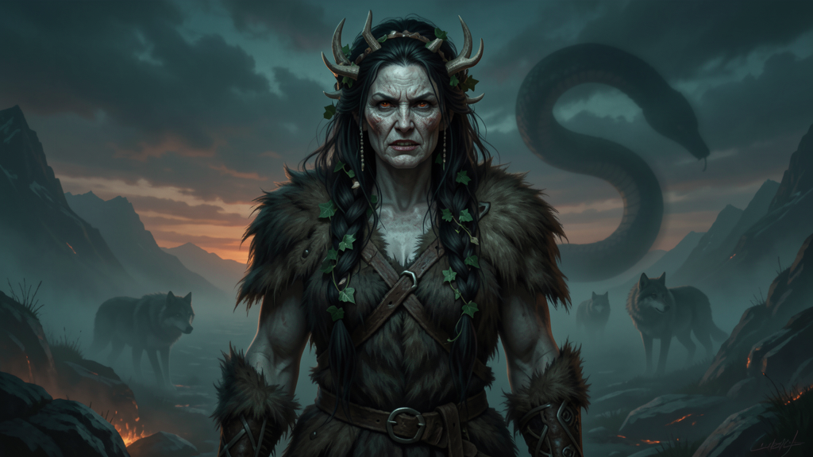

Fulfillment systems, lead-gen pipelines, and the operational mother-wit behind every monstrous growth spurt.

She Who Brings Grief — Angrboða (Old Norse Angrboða, "the one who brings grief") is a jötunn of Jötunheimr, named in Snorri's Gylfaginning as the consort of Loki and the mother of three of his children: the wolf Fenrir, the Midgard Serpent Jörmungandr, and Hel, who rules the dead (Gylfaginning 34). The Poetic Edda knows her too — Hyndluljóð names her Loki's consort. Beyond that she has no surviving narrative of her own. Her power is generative, not martial: she is the archetype of the operator who builds the pipeline that others then fear.
The corrected saga is simple and stark. When Óðinn learned of the three monstrous children, he took them from Angrboða: he cast Jörmungandr into the sea, sent Hel to Niflheim to rule the dead, and reared Fenrir in Asgard until the wolf had to be bound with Gleipnir. Angrboða's named role ends where the recorded myth ends — yet every one of those three became a force the gods could not contain. Her lesson is for the agency that does the unglamorous generative work: the fulfillment, the lead-gen, the backend that makes the flashy front-end possible. (Minor elaboration: "she who brings grief" is a modern English rendering of the name's sense; the sources name her only as Loki's consort and the mother of the three.)
Angrboða never swung a weapon; she built the pipeline. Fenrir, Jörmungandr, and Hel were not accidents of battle — they were the output of her generative work, and each became a force the gods could not contain. The agency lesson is the same: the unglamorous back office — fulfillment, lead-gen, the backend that feeds the flashy front-end — is what actually scales a business. Most agencies show the client the "wolf" (the result) and hide the mother (the system).
Angrboða's fix is a fulfillment engine that produces monstrous output reliably, so your growth is generated, not improvised. When the generative layer is automated, the visible wins stop depending on whoever happens to be awake.
Lead-gen and fulfillment automation for agencies that need output at monster scale. The generative engine behind every win. Make.com + n8n ready.
Buy on the Marketplace → View all products